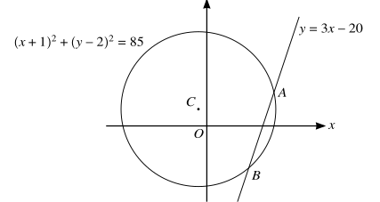
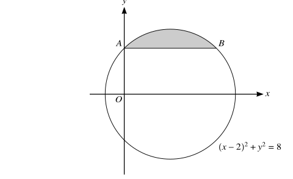
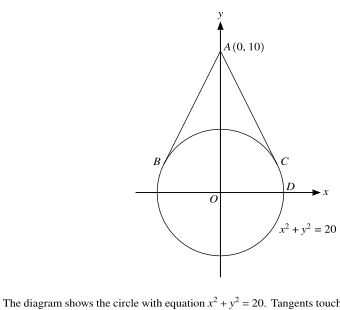
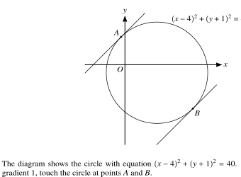

1.3 Coordinate geometry
Lines · circles · intersections · tangents · perpendicular relationships
本页依据 9709 Mathematics 2026–2027 syllabus 1.3 Coordinate geometry：
- 使用 y=mx+c、y-y_1=m(x-x_1)、ax+by+c=0 等直线形式；
- 计算 gradient、distance、midpoint，并判断 parallel/perpendicular；
- 理解 (x-a)^2+(y-b)^2=r^2 及 expanded circle equation；
- 用 algebraic methods 处理 lines and circles，包括 tangent perpendicular to radius、angle in a semicircle 和 symmetry；
- 用交点的代数方程理解 graph 与 equation 的关系。
下列 20 组题目均来自工作区保存的 Paper 1 原始 past-paper PDF。题干只把 PDF 排版符号整理为 LaTeX，没有改写或编造题目；答案按对应 mark scheme 的步骤展开。题目中的必要图形均从原始 PDF 独立提取为 SVG，不使用整页截图。
1. Core knowledge
Lines and gradients
两点 (x_1,y_1)、(x_2,y_2) 的 gradient 是
m=\frac{y_2-y_1}{x_2-x_1}.
因此：
\text{parallel}\Longleftrightarrow m_1=m_2, \qquad \text{perpendicular}\Longleftrightarrow m_1m_2=-1.
过 (x_1,y_1) 且 gradient 为 m 的直线写成
y-y_1=m(x-x_1).
Vertical line 要单独写成 x=a，不能强行写成 y=mx+c。
Circles
标准式
(x-a)^2+(y-b)^2=r^2
的 centre 是 (a,b)，radius 是 r。一般式
x^2+y^2+2gx+2fy+c=0
可通过 completing the square 化为标准式。圆上点 P 处的 tangent 与 radius CP perpendicular；因此先求 centre，再用 perpendicular gradient 或点到直线距离，通常是最稳妥的方法。
Intersections and tangency
求 line 与 circle 的交点时，把 line equation 代入 circle equation，得到关于 x 或 y 的 quadratic。两 distinct intersections 对应 two distinct real roots；tangent 对应 repeated root，也就是 discriminant 为 0。
若圆心为 C，直线为 ax+by+c=0，圆心到直线的距离为
d=\frac{|a x_C+b y_C+c|}{\sqrt{a^2+b^2}}.
当直线是 tangent 时，d=r。
Perpendicular bisector and circle geometry
线段 AB 的 perpendicular bisector：
- 求 midpoint M；
- 求 AB 的 gradient；
- 取 perpendicular gradient；
- 写出经过 (M) 的直线。
圆的 diameter 的 midpoint 是 centre；若 AB 是 diameter，则 centre 是 AB 的 midpoint，radius 是 AB/2。
2. Verified Paper 1 past-paper questions
Question 1 · 9709/11/O/N/20 Q5(a–b)
The equation of a line is y=mx+c, where m and c are constants, and the equation of a curve is xy=16.
Given that the line is a tangent to the curve, express m in terms of c. [3]
Given instead that m=-4, find the set of values of c for which the line intersects the curve at two distinct points. [3]
Show detailed mark scheme answer
The curve can be written as y=16/x. At an intersection with y=mx+c,
x(mx+c)=16,
so
mx^2+cx-16=0.
- Tangency means a repeated root, so
c^2-4(m)(-16)=0\Longrightarrow c^2+64m=0.
Hence
\boxed{m=-\frac{c^2}{64}}.
- With m=-4,
-4x^2+cx-16=0,
or equivalently 4x^2-cx+16=0. For two distinct points,
c^2-4(4)(16)>0\Longrightarrow c^2>256.
Therefore
\boxed{c<-16\text{ or }c>16}.PastPaper/2020/2020/9709_w20_qp_11.pdf, Q5(a–b), and matching 9709_w20_ms_11.pdf.
Question 2 · 9709/11/O/N/20 Q10(a–c)
The coordinates of the points A and B are (-1,-2) and (7,4) respectively.
Find the equation of the circle C, for which AB is a diameter. [4]
Find the equation of the tangent T to circle C at the point B. [4]
Find the equation of the circle which is the reflection of circle C in the line T. [3]
Show detailed mark scheme answer
- The midpoint of (AB) is
C=\left(\frac{-1+7}{2},\frac{-2+4}{2}\right)=(3,1).
Also,
AB^2=(7+1)^2+(4+2)^2=8^2+6^2=100,
so the radius is (5). Therefore
\boxed{(x-3)^2+(y-1)^2=25}.
- The radius CB has gradient \frac68=\frac34. The tangent gradient is -\frac43, so
y-4=-\frac43(x-7).
Hence
\boxed{4x+3y=40}.
- Reflect the centre C=(3,1) in 4x+3y-40=0. The perpendicular distance calculation gives the reflected centre
C'=(11,7).
Reflection preserves the radius, so the reflected circle is
\boxed{(x-11)^2+(y-7)^2=25}.PastPaper/2020/2020/9709_w20_qp_11.pdf, Q10(a–c), and matching 9709_w20_ms_11.pdf.
Question 3 · 9709/12/M/J/20 Q11(a–d)
The equation of a circle with centre (C) is
x^2+y^2-8x+4y-5=0.
- Find the radius of the circle and the coordinates of (C). [3]
The point (P(1,2)) lies on the circle.
- Show that the equation of the tangent to the circle at P is 4y=3x+5. [3]
The point (Q) also lies on the circle and (PQ) is parallel to the (x)-axis.
- Write down the coordinates of (Q). [2]
The tangents to the circle at (P) and (Q) meet at (T).
- Find the coordinates of (T). [3]
Show detailed mark scheme answer
x^2-8x+y^2+4y-5=0 \Longrightarrow (x-4)^2+(y+2)^2=25.
Thus \boxed{C=(4,-2)} and \boxed{r=5}.
- The radius CP has vector (-3,4), so its gradient is -\frac43. The tangent gradient is \frac34. Through P=(1,2),
y-2=\frac34(x-1)\Longrightarrow \boxed{4y=3x+5}.
- Since PQ is horizontal, y_Q=2. Substitution into the circle gives
(x-4)^2+16=25\Longrightarrow x-4=\pm3.
The point different from P is \boxed{Q=(7,2)}.
- The tangent at (Q) has gradient (-3/4), so
y-2=-\frac34(x-7)\Longrightarrow 3x+4y=29.
Together with 4y=3x+5,
6x=34\Longrightarrow x=\frac{17}{3},\qquad y=\frac{11}{2}.
Therefore \boxed{T=(17/3,11/2)}.PastPaper/2020/2020/9709-s20-qp-12.pdf, Q11(a–d), and matching 9709-s20-ms-12.pdf.
Question 4 · 9709/13/M/J/20 Q10(a–b)
The coordinates of two points A and B are (-7,3) and (5,11) respectively.
Show that the equation of the perpendicular bisector of AB is 3x+2y=11. [4]
A circle passes through A and B and its centre lies on the line 12x-5y=70. Find an equation of the circle. [5]
Show detailed mark scheme answer
- The midpoint is
M=\left(\frac{-7+5}{2},\frac{3+11}{2}\right)=(-1,7).
The gradient of AB is \frac8{12}=\frac23, so the perpendicular gradient is -\frac32. Hence
y-7=-\frac32(x+1)\Longrightarrow \boxed{3x+2y=11}.
- The centre lies on both 3x+2y=11 and 12x-5y=70. Solving,
\boxed{C=(5,-2)}.
The radius squared using (A) is
r^2=(5+7)^2+(-2-3)^2=144+25=169.
Therefore
\boxed{(x-5)^2+(y+2)^2=169}.PastPaper/2020/2020/9709-s20-qp-13.pdf, Q10(a–b), and matching 9709-s20-ms-13.pdf.
Question 5 · 9709/12/F/M/21 Q8(a–b)
The points A=(7,1), B=(7,9) and C=(1,9) are on the circumference of a circle.
Find an equation of the circle. [5]
Find an equation of the tangent to the circle at (B). [2]
Show detailed mark scheme answer
Since AB is vertical, its perpendicular bisector is y=5. Since BC is horizontal, its perpendicular bisector is x=4. Thus the centre is O=(4,5).
The radius squared is
r^2=(7-4)^2+(1-5)^2=9+16=25.
Therefore
\boxed{(x-4)^2+(y-5)^2=25}.
At (B), the radius has gradient (4/3), so the tangent gradient is (-3/4). Hence
y-9=-\frac34(x-7),
or
\boxed{3x+4y=57}.PastPaper/2021/2021/9709_m21_qp_12.pdf, Q8(a–b), and matching 9709_m21_ms_12.pdf.
Question 6 · 9709/11/M/J/21 Q10(a–b)
The equation of a circle is
x^2+y^2-4x+6y-77=0.
Find the x-coordinates of the points A and B where the circle intersects the x-axis. [2]
Find the point of intersection of the tangents to the circle at (A) and (B). [6]
Show detailed mark scheme answer
- On the x-axis, y=0:
x^2-4x-77=0=(x-11)(x+7).
Thus the points are (-7,0) and (11,0), so the x-coordinates are \boxed{-7,11}.
- Complete the square:
(x-2)^2+(y+3)^2=90,
so the centre is (2,-3). At (-7,0), the radius gradient is -1/3, so the tangent is y=3x+21. At (11,0), the radius gradient is 1/3, so the tangent is y=-3x+33.
Solving,
3x+21=-3x+33\Longrightarrow x=2,qquad y=27.
Therefore the tangents meet at \boxed{(2,27)}.PastPaper/2021/2021/9709_s21_qp_11.pdf, Q10(a–b), and matching 9709_s21_ms_11.pdf.
Question 7 · 9709/12/O/N/21 Q6
Points A and B have coordinates (8,3) and (p,q) respectively. The equation of the perpendicular bisector of AB is y=-2x+4.
Find the values of (p) and (q). [4]
Show detailed mark scheme answer
The perpendicular bisector has gradient -2, so AB has gradient 1/2:
\frac{q-3}{p-8}=\frac12\Longrightarrow p=2q+2.
The midpoint \left(\frac{8+p}{2},\frac{3+q}{2}\right) lies on y=-2x+4:
\frac{3+q}{2}=-2\left(\frac{8+p}{2}\right)+4=-4-p.
Hence 2p+q=-11. Combining with p=2q+2,
q=-3,qquad p=-4.
Therefore \boxed{p=-4,\ q=-3}.PastPaper/2021/2021/9709_s21_qp_12.pdf, Q6, and matching 9709_s21_ms_12.pdf.
Question 8 · 9709/11/O/N/21 Q7(a–b)
A circle with centre (5,2) passes through the point (7,5).
- Find an equation of the circle. [2]
The line y=5x-10 intersects the circle at A and B.
- Find the exact length of the chord AB. [7]
Show detailed mark scheme answer
r^2=(7-5)^2+(5-2)^2=13,
so
\boxed{(x-5)^2+(y-2)^2=13}.
- Substitute y=5x-10:
(x-5)^2+(5x-12)^2=13.
This simplifies to
26x^2-130x+156=0 \Longrightarrow (x-2)(x-3)=0.
The intersection points are (2,0) and (3,5). Thus
AB=\sqrt{(3-2)^2+(5-0)^2}=\boxed{\sqrt{26}}.PastPaper/2021/2021/9709_w21_qp_11.pdf, Q7(a–b), and matching 9709_w21_ms_11.pdf.
Question 9 · 9709/12/F/M/22 Q6(a–b)

The circle with equation (x+1)^2+(y-2)^2=85 and the straight line with equation y=3x-20 are shown in the diagram. The line intersects the circle at A and B, and the centre of the circle is at C.
Find, by calculation, the coordinates of A and B. [4]
Find an equation of the circle which has its centre at C and for which the line with equation y=3x-20 is a tangent to the circle. [4]
Show detailed mark scheme answer
- Substitute y=3x-20:
(x+1)^2+(3x-22)^2=85 \Longrightarrow 10x^2-130x+400=0.
Thus
x^2-13x+40=0=(x-5)(x-8).
The corresponding y-coordinates are -5 and 4. Hence the two points are
\boxed{(5,-5)\text{ and }(8,4)}.
- The centre is C=(-1,2). The distance from C to 3x-y-20=0 is
r=\frac{|3(-1)-2-20|}{\sqrt{3^2+(-1)^2}}=\frac{25}{\sqrt{10}}.
Therefore the required circle is
\boxed{(x+1)^2+(y-2)^2=\frac{125}{2}}.PastPaper/2022/2022/9709_m22_qp_12.pdf, Q6(a–b), and matching 9709_m22_ms_12.pdf. The diagram is an independently extracted, annotation-cleaned SVG from the original PDF.
Question 10 · 9709/12/F/M/22 Q8(a)

The diagram shows the circle with equation (x-2)^2+y^2=8. The chord AB of the circle intersects the positive y-axis at A and is parallel to the x-axis.
- Find, by calculation, the coordinates of A and B. [3]
Show detailed mark scheme answer
Since A is on the positive y-axis, x=0. Hence
(-2)^2+y^2=8\Longrightarrow y^2=4,
so A=(0,2). Because AB is parallel to the x-axis, y_B=2. Then
(x_B-2)^2+2^2=8\Longrightarrow (x_B-2)^2=4.
The point other than A has x_B=4, so
\boxed{A=(0,2),\quad B=(4,2)}.PastPaper/2022/2022/9709_m22_qp_12.pdf, Q8(a), and matching 9709_m22_ms_12.pdf. The diagram is an independently extracted, annotation-cleaned SVG from the original PDF.
Question 11 · 9709/11/M/J/22 Q9(a–b)
The equation of a circle is
x^2+y^2+6x-2y-26=0.
Find the coordinates of the centre of the circle and the radius. Hence find the coordinates of the lowest point on the circle. [4]
Find the set of values of the constant k for which the line y=kx-5 intersects the circle at two distinct points. [6]
Show detailed mark scheme answer
(x+3)^2+(y-1)^2=36.
Thus the centre is (-3,1), radius 6, and the lowest point is
\boxed{(-3,-5)}.
- Substitute y=kx-5:
(1+k^2)x^2+(6-12k)x+9=0.
For two distinct intersections,
\begin{aligned} \Delta&=(6-12k)^2-36(1+k^2)>0\\ &=36(3k^2-4k)>0\\ &=36k(3k-4)>0. \end{aligned}
Hence
\boxed{k<0\text{ or }k>\frac43}.PastPaper/2022/2022/9709_s22_qp_11.pdf, Q9(a–b), and matching 9709_s22_ms_11.pdf.
Question 12 · 9709/11/O/N/22 Q11(a–c)

The diagram shows the circle with equation x^2+y^2=20. Tangents touching the circle at points B and C pass through A=(0,10).
By letting the equation of a tangent be y=mx+10, find the two possible values of m. [4]
Find the coordinates of B and C. [3]
The point (D) is where the circle crosses the positive (x)-axis.
- Find angle (BDC) in degrees. [3]
Show detailed mark scheme answer
- Substitute y=mx+10 into x^2+y^2=20:
(1+m^2)x^2+20mx+80=0.
Tangency gives
(20m)^2-4(1+m^2)(80)=0 \Longrightarrow m^2=4.
Thus \boxed{m=2\text{ or }m=-2}.
- The repeated root is x=-20m/[2(1+m^2)]=-2m. Therefore the points of contact are
\boxed{B=(-4,2),\quad C=(4,2)}
in either order.
- D=(2\sqrt5,0). Using vectors \overrightarrow{DB} and \overrightarrow{DC},
\cos\angle BDC=\frac{\overrightarrow{DB}\cdot\overrightarrow{DC}}{|DB||DC|}=\frac1{\sqrt5}.
Hence
\boxed{\angle BDC=\cos^{-1}\left(\frac1{\sqrt5}\right)=63.4^\circ}
to 1 decimal place.PastPaper/2022/2022/9709_w22_qp_11.pdf, Q11(a–c), and matching 9709_w22_ms_11.pdf. The diagram is an independently extracted SVG from the original PDF.
Question 13 · 9709/12/F/M/23 Q5
Points A=(7,12) and B lie on a circle with centre (-2,5). The line AB has equation y=-2x+26.
Find the coordinates of (B). [6]
Show detailed mark scheme answer
The radius through (A) has squared length
r^2=(7+2)^2+(12-5)^2=9^2+7^2=130.
Any point B=(x,-2x+26) on the circle satisfies
(x+2)^2+(-2x+21)^2=130.
Expanding and simplifying,
5x^2-80x+315=0 \Longrightarrow (x-7)(x-9)=0.
The root x=7 gives the known point A. Thus x_B=9, and
y_B=-2(9)+26=8.
Therefore \boxed{B=(9,8)}.PastPaper/2023/2023/9709_m23_qp_12.pdf, Q5, and matching 9709_m23_ms_12.pdf.
Question 14 · 9709/13/O/N/23 Q2(a–b)
The circle with equation (x-3)^2+(y-5)^2=40 intersects the y-axis at points A and B.
Find the y-coordinates of A and B, expressing your answers in terms of surds. [2]
Find the equation of the circle which has AB as its diameter. [2]
Show detailed mark scheme answer
On the y-axis, x=0:
9+(y-5)^2=40\Longrightarrow (y-5)^2=31.
Thus the y-coordinates are \boxed{5+\sqrt{31}\text{ and }5-\sqrt{31}}.
The midpoint of A and B is (0,5), and their distance is 2\sqrt{31}, so the circle with AB as diameter has centre (0,5) and radius \sqrt{31}:
\boxed{x^2+(y-5)^2=31}.PastPaper/2023/2023/9709_w23_qp_13.pdf, Q2(a–b), and matching 9709_w23_ms_13.pdf.
Question 15 · 9709/11/O/N/23 Q11(a–c)

The diagram shows the circle (x-4)^2+(y+1)^2=40. Parallel tangents, each with gradient 1, touch the circle at points A and B.
Find the equation of the line AB, giving the answer in the form y=mx+c. [3]
Find the coordinates of (A), giving each coordinate in surd form. [4]
Find the equation of the tangent at A, giving the answer in the form y=mx+c, where c is in surd form. [2]
Show detailed mark scheme answer
- The centre is (4,-1). A line of gradient 1 has form y=x+c. The distance from the centre to x-y+c=0 must be 2\sqrt{10}:
\frac{|4-(-1)+c|}{\sqrt2}=2\sqrt{10}\Longrightarrow |5+c|=2\sqrt5.
The line joining the two contact points is perpendicular to the parallel tangents, so it has gradient -1 and passes through the centre (4,-1). Hence
\boxed{AB:y=-x+3}.
- The radius CA is perpendicular to AB, so its gradient is -1. The perpendicular through C is y=-x+3. Intersecting with the upper tangent,
-x+3=x-5+2\sqrt5 \Longrightarrow x=4-\sqrt5,
and
y=\sqrt5-1.
Therefore \boxed{A=(4-\sqrt5,\sqrt5-1)}.
- The radius gradient is (-1), so the tangent gradient is (1). Thus the tangent at (A) is the upper parallel tangent:
PastPaper/2023/2023/9709_w23_qp_11.pdf, Q11(a–c), and matching 9709_w23_ms_11.pdf. The diagram is an independently extracted SVG from the original PDF.
Question 16 · 9709/12/O/N/23 Q11(a–c)
The coordinates of points A, B and C are (6,4), (p,7) and (14,18) respectively, where p is a constant. The line AB is perpendicular to the line BC.
- Given that p<10, find the value of p. [4]
A circle passes through the points (A), (B) and (C).
Find the equation of the circle. [3]
Find the equation of the tangent to the circle at C, giving the answer in the form dx+ey+f=0. [3]
Show detailed mark scheme answer
- The perpendicular condition gives
\frac{3}{p-6}\cdot\frac{11}{14-p}=-1.
Therefore
(p-6)(14-p)=-33 \Longrightarrow p^2-20p+51=0.
So p=3 or 17. Since p<10, \boxed{p=3}, hence B=(3,7).
- Let the circle be x^2+y^2+Dx+Ey+F=0. Substitution of A, B, C gives
6D+4E+F=-52, 3D+7E+F=-58, 14D+18E+F=-520.
Solving gives D=-20, E=-22, F=156. Hence
\boxed{x^2+y^2-20x-22y+156=0}.
- The centre is (10,11), so the radius C=(14,18) has gradient 7/4. The tangent gradient is -4/7. Thus
y-18=-\frac47(x-14),
which simplifies to
\boxed{4x+7y-182=0}.PastPaper/2023/2023/9709_w23_qp_12.pdf, Q11(a–c), and matching 9709_w23_ms_12.pdf.
Question 17 · 9709/11/M/J/24 Q10
The equation of a circle is (x-3)^2+y^2=18. The line with equation y=mx+c passes through the point (0,-9) and is a tangent to the circle.
Find the two possible values of m and, for each value of m, find the coordinates of the point at which the tangent touches the circle. [8]
Show detailed mark scheme answer
Since the line passes through (0,-9), it is y=mx-9, or mx-y-9=0. The centre is (3,0) and the radius is 3\sqrt2. Tangency gives
\frac{|3m-9|}{\sqrt{m^2+1}}=3\sqrt2.
Squaring and simplifying,
(m-3)^2=2(m^2+1) \Longrightarrow m^2+6m-7=0.
Thus \boxed{m=1\text{ or }m=-7}.
For m=1, the line is x-y-9=0. The perpendicular foot from (3,0) is \boxed{(6,-3)}.
For m=-7, the line is 7x+y+9=0. The perpendicular foot from (3,0) is \boxed{\left(-\frac65,-\frac35\right)}.
Both points lie on (x-3)^2+y^2=18, confirming the tangent points.PastPaper/2024/2024/qp-202406-mathematics-p11.pdf, Q10, and matching ms-202406-mathematics-p11.pdf.
Question 18 · 9709/12/M/J/24 Q7(a–b)
The equation of a circle is (x-6)^2+(y+a)^2=18. The line with equation y=2a-x is a tangent to the circle.
Find the two possible values of the constant a. [5]
For the greater value of a, find the equation of the diameter which is perpendicular to the given tangent. [3]
Show detailed mark scheme answer
The centre is C=(6,-a), radius 3\sqrt2. The line is x+y-2a=0. The distance from C to the line is
\frac{|6-a-2a|}{\sqrt2}=\frac{|6-3a|}{\sqrt2}.
Tangency requires this to equal 3\sqrt2:
|6-3a|=6\Longrightarrow |a-2|=2.
Thus \boxed{a=0\text{ or }a=4}.
For the greater value a=4, the centre is (6,-4). The given tangent has gradient -1, so the perpendicular diameter has gradient 1 and passes through the centre:
y+4=x-6.
Therefore \boxed{y=x-10}.PastPaper/2024/2024/qp-202406-mathematics-p12.pdf, Q7(a–b), and matching ms-202406-mathematics-p12.pdf.
Question 19 · 9709/13/M/J/24 Q8
A circle with equation
x^2+y^2-6x+2y-15=0
meets the y-axis at the points A and B. The tangents to the circle at A and B meet at the point P.
Find the coordinates of (P). [8]
Show detailed mark scheme answer
Complete the square:
(x-3)^2+(y+1)^2=25.
On the y-axis, x=0:
y^2+2y-15=0=(y-3)(y+5).
Thus A=(0,3), B=(0,-5).
The centre is (3,-1). At A, the radius gradient is -4/3, so the tangent gradient is 3/4:
y-3=\frac34x.
At B, the radius gradient is 4/3, so the tangent gradient is -3/4:
y+5=-\frac34x.
Solving,
3+\frac34x=-5-\frac34x \Longrightarrow x=-\frac{16}{3},qquad y=-1.
Therefore \boxed{P=(-16/3,-1)}.PastPaper/2024/2024/qp-202406-mathematics-p13.pdf, Q8, and matching ms-202406-mathematics-p13.pdf.
Question 20 · 9709/12/O/N/24 Q8(a–b)
The equation of a circle is
x^2+y^2+px+2y+q=0,
where p and q are constants.
- Express the equation in the form (x-a)^2+(y-b)^2=r^2, where a is to be given in terms of p and r^2 is to be given in terms of p and q. [2]
The line x+2y=10 is the tangent to the circle at A(4,3).
- Find the equation of the normal to the circle at A. [3]
- Find the values of p and q. [5]
Show detailed mark scheme answer
x^2+px+y^2+2y+q=0
gives
\boxed{\left(x+\frac p2\right)^2+(y+1)^2=\frac{p^2}{4}-q+1}.
Thus the centre is \left(-\frac p2,-1\right).
(b)(i) The tangent x+2y=10 has gradient -\frac12, so the normal has gradient 2. Through A=(4,3),
y-3=2(x-4),
so \boxed{y=2x-5}.
(b)(ii) The centre lies on the normal. Since its y-coordinate is -1,
-1=2x-5\Longrightarrow x=2.
Therefore -\frac p2=2, so p=-4. Substituting A=(4,3) into the original equation,
16+9-16+6+q=0\Longrightarrow q=-15.
Hence \boxed{p=-4,\quad q=-15}.PastPaper/2024/2024/qp-202410-mathematics-p12.pdf, Q8(a–b), and matching ms-202410-mathematics-p12.pdf.